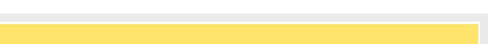
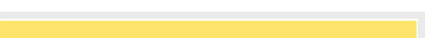

![[English Version]](images/header-left-en.gif) 

LogicS: A Modal Perspective
The course introduces a number of logics that are important in many modern scientific disciplines: propositional logic, modal and temporal logics, description logics, first-order logic, fix-point logic and second-order logic.
It will introduce them in a way that makes clear both the underlying unity of these systems, their differences, possible uses and applications.
Beginning with propositional logic, it presents logical languages of increasing strength for talking about relational structures, and in parallel it studies inference tasks (satisfiability, model checking, model building, etc.) and algorithms for them.
The instructors believe that the course material is indispensable to a modern education in logic. Unfortunately, much of it is only currently available in advanced courses and textbooks.
This course is designed to make this material accessible to an interdisciplinary audience, and it is based on a book being written by the instructors.
Lecturers
- Carlos Areces and Patrick Blackburn
- Email: firstname.lastname@loria.fr
Slides
- Tutorial (Sunday's Introduction to Logic)
- Slides Set 1
- Slides Set 2
- Spillover 1
- Slides Set 3
- Slides Set 4
- Spillover 2
- Slides Set 5
- Slides Set 6
- Slides Set 7
- Slides Set 8
- Slides Set 9
- Handout (All the slides above for printing, in 2x8 format, without the animations.)
- The End